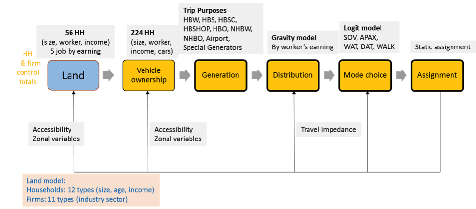

Strategically Adaptive Sustainable Mobility Systems
Greater Boston Land Use and Transport Model
Our team has developed, calibrated and partially validated an integrated land use-transport (LUT) model for the Boston metropolitan area and run the model under alternative scenarios up to 2030.
The land and transport models are linked by accessibility measures, household and firm locations, and other zonal variables derived from number of agents and travel skims, updated during each model iteration (Figure 1). The models are integrated via python scripting which automates the full model system running including the necessary translation between the different zonal structures and agent types across the land use and transport models and updating of the endogenous variables (e.g. accessibility) based on each model’s outputs.
In the available computational environment, each complete LUT loop required four hours and we ran 5 loops per scenario, meaning each model run required 20 hours (the majority of computational consumption came from the network assignment stage).
Transport Model
On the transport side of the LUT model, we developed an enhanced four-step transport model for Boston Metropolitan Area. Compared to conventional practices, we introduced more complexity and flexibility to the model, which provides a richer representation of reality, and the ability to run uncertainty simulations (including alternative models) inside a four-step model.
- Important/new features:
- A rich characterization of households (224 household types);
- Work-at-home likelihood (varying by earning groups) considered for home-based work trip generation rates;
- Trip distribution varying by income category;
- Road traffic assignment disaggregated by household income.
- Embedded python scripts for first three steps.
For more details on model specification and estimation, see model specification and estimation and model outputs and validation for 1990 and 2010.
[ Work undertaken by MIT Graduate Students, Yafei Han, Michael Dowd, and Shenhao Wang, under supervision by Zegras and CEE Research Associate Mikel Murga. ]
Land Use Model
The land use model is implemented in Cube Land, the commercial version of MUSSA, an operational land use model based on auction theory. The market equilibrium model consists of three sub-models: Demand, Supply and Rent model.
- Demand model: a consumer decides the bid for each type of property in each zone. The bid or willingness to pay, comes from the utility function, which depends on the consumer characteristics, real estate attributes and location. Given fixed supply, the highest bidder wins.
- Supply model: supply agents decide the amount of each type of real estate to offer based on profit maximization.
- Rent model: connects supply and demand. The auction process adjusts rents and bids until all agents are located without incentive to move. In the end, we did not include the firm rent module into the final land use model because of the lack of data.
Our LU model version allocates 12 types of households (defined by age, income, size), and 11 types of firms (defined by industry) to 12 kinds of real estate units (e.g., single family, large apartment) in each traffic analysis zone (TAZ).
- For location choice model details, click here:
- Firm: Posada, Pablo. 2015. Location, Location, Location Choice Model.
- Household: Household Location Choice Model
[ Work undertaken by MIT Graduate Students, Pablo Posada and Menghan Li, MIT postdoc Victor Rocco, under supervision by Zegras. ]